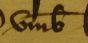

B Handschriftliche Texte
1 Buchstaben und Zeichen
Die buchstabengetreue Wiedergabe der Handschrift bildet die Grundregel. Entsprechend erfolgen keine Anpassungen an klassisches Latein.
1.1 Versalien
Versalien werden nur buchstabengetreu übernommen.
Beispiel: WJR —> wir
1.2 Konsonantenverdoppelungen
Konsonantenverdoppelungen werden buchstabengetreu wiedergegeben und Verdoppelungszeichen werden aufgelöst. Ein Strich über m oder n – nicht aber
über mm oder nn – wird stillschweigend als mm oder nn aufgelöst.
Ausnahmen: Im folgenden Beispiel wird der Strich über dem m am besten ignoriert und einfach mit umb (statt ummb) transkribiert.

Nasalstrich über m in Kombination mit b/p wird ignoriert: nempt (statt nemmpt).

Die Wiederholung von Anfangsbuchstaben wird beibehalten, aber getrennt vom vorherigen Wort, an das er möglicherweise angehängt wurde.
Handelt es sich hingegen um einen Ausdruck, der in die Umgangssprache eingegangen ist, wird die Agglutination beibehalten. Wenn der Ausdruck z. B. illiaz (für «il y a») im Ausgangstext agglutiniert ist, sollte er gemäss Vorlage transkribiert werden (und nicht ill i az).
Beispiele: a sses parents (und nicht asses parents), assavoir (und nicht a ssavoir)
1.3 Buchstaben in Form oder Verwendung vom heutigen Gebrauch abweichend
1.3.1 Vokale
e caudata (ę)
e caudata (ę) wird im Lateinischen vom gewöhnlichen e unterschieden.
Die Gelehrten des 17. und 18. Jahrhunderts neigten aufgrund von Hyperkorrekturen dazu, die Diphthongierung zu bevorzugen. Wenn ein mittelalterliches Original erhalten ist, sollte die Schreibweise des Ausgangstextes beibehalten werden, d. h. das «ę», das in späteren Kopien wahrscheinlich als «æ» geschrieben wurde, sollte wiedergegeben werden. Wenn nur die spätere Abschrift existiert, sollte man sich an die Schreibweise dieser Abschrift halten und den Diphthong getreu wiedergeben.
I und j
I und j werden nicht entsprechend der Schaftlänge unterschieden. Konsequente graphematische Unterscheidung zwischen vokalischem i vor Konsonanten und konsonantischem j vor Vokalen. Bei Fällen, in denen lediglich ein Dehnungs-h zwischen j und Vollvokal geschoben wird , soll das j nicht durch ein i ersetzt werden.
Wenn ein französischer Text die Schreibweise «ieu» etnhält, ist es aus Gründen des Verständnisses besser, «jeu» zu schreiben. Es gilt also, die Bedeutung zu berücksichtigen und Entscheidungen zu treffen, die den Text lesbarer machen. Beispielsweise muss zwischen «majeur» und «maieur» (Bürgermeister) unterschieden werden.
Beispiele: «ich» (und nicht «jch»), «jeu» (und nicht «ieu»); aber «jhe» (und nicht «ihe»), «jhenige» (und nicht «ihenige»)
In lateinischen Texten wird y oder j als i wiedergegeben. Das gilt auch für römische Zahlen. Eine Ausnahme sind Eigennamen.
Beispiele: «remedii» (und nicht «remedij»), «xviii» (und nicht «xviij»; aber «Johannes» (und nicht «Iohannes»)
u und v
U und v werden unabhängig von der Vorlage lautgetreu wiedergegeben, nämlich der Vokal mit u und der Konsonant mit v.
Im Lateinischen sollte ein u, das als Konsonant fungiert, mit v transkribiert werden, und die Schreibweise u beibehalten werden, wenn es als Vokal fungiert. Diese Regel gilt im Prinzip auch für das Französische. Ausnahmen können jedoch gerechtfertigt sein. In einem Text aus dem 12. Jahrhundert, der in Altfranzösisch verfasst wurde, kann man beispielsweise die Schreibweise «il savroit» zulassen; in einem Text in Mittelfranzösisch aus dem 15. Jahrhundert sollte man «il sauroit» schreiben.
uu
Die Schreibweise uu sollte im Lateinischen mit w wiedergegeben werden, wenn es sich um einen velaren labialen Halbkonsonanten handelt (insbesondere in Wörtern germanischen Ursprungs).
Beispiel: «wadium» (und nicht «uuadium»)
Ansonsten kann die Wiedergabe je nach Fall variieren (uu, uv, vu).
Beispiele: equus, euvangelium, vulgaris
Im Französischen ist die Regel im Prinzip die gleiche: Man kann jedoch präzisieren, dass in allen Fällen vu geschrieben wird, wenn u ein Vokal ist oder das erste Element eines Diphthongs darstellt.
Beispiele: vulgaire, vueil, vuider, nouvel
In manchen Fällen muss der Bearbeitende eine Wahl treffen, die er konsequent durchhalten muss, insbesondere wenn er mit Vornamen konfrontiert ist: Vuillelmus versus Willelmus, Vuibert versus Wibert. Der sprachliche Kontext kann bei der Auswahl natürlich hilfreich sein, ist aber nicht immer einfach, vor allem in zweisprachigen Regionen wie Freiburg.
y
Zwei Punkte oder ein Strich über y werden weggelassen. Wenn ein Wort in einem mittelalterlichen lateinischen Text auf etwas endet, das visuell wie ein y aussieht, muss es mit einem Doppel-i am Ende transkribiert werden.
Beispiele: «monasterii» (und nicht «monastery»), julii (und nicht «july»)
1.3.2 Konsonanten bzw. Buchstabenverbindungen
c / t
In lateinischen Texten wird c / t gemäss Vorlage transkribiert. Wenn es nicht möglich ist, zwischen c und t zu unterscheiden, wird in der Regel die klassische Form bevorzugt.
Beispiel: «cognitio» (und nicht «cognicio»)
n / m
Der Gebrauch von n anstelle von m (z. B. cunque) in lateinischen Texten wird übernommen, wenn der Buchstabe ausgeschrieben ist.
s / ß
Von den verschiedenen Schreibweisen des Buchstabens s (normal, lang, ß) wird nur ß als besondere Form unterschieden. Langes s wird als gewöhnliches s geschrieben. Dreifache s (sss, sß, ßs) werden mit ss bzw. ß transkribiert (Dreifaches s wird zu ss, die Kombinationen sß, ßs zu ß.). Anlautendes ß wird als s wiedergegeben. Ist am langen s noch ein angefügtes rundes s erkennbar, wird von einer Ligatur ausgegangen und «ss» transkribiert. Sind hingegen keine Ansätze zu einem runden s erkennbar oder handelt es sich lediglich um einen Bindungsbogen zum nächsten Buchstaben, wird «ß» transkribiert. Da sich zahlreiche Übergangsformen finden, liegt die Entscheidung im Ermessen des Bearbeitenden. Insbesondere wenn sich beide Formen innerhalb desselben Textes finden, sind diese in der Transkription zu
Beispiel ß mit Bindebogen [to do [Datei:Beispiel ß mit Bindebogen.gif]]
Beispiel mit ss und ß [to do [Datei:Beispiel mi ss und ß.gif]]
In lateinischen Texten wird das Schluss-s als einfaches s transkribiert und nicht als Scharf-s, da es sich lediglich um eine Ligatur handelt.
cz / sz /tz
Cz, sz, tz werden gemäss Vorlage wiedergegeben. Lassen sich t und c nicht eindeutig unterscheiden, dann wird tz verwendet.
dz / dc /wz
Dz, dc, wz etc. werden gemäss Vorlage wiedergegeben oder gemäss der modernen Schreibweise des entsprechenden Wortes oder der klassischen Schreibweise aufgelöst, wenn der Text auf Lateinisch ist.
Beispiel: «vz» wird stillschweigend zu «videlicet» aufgelöst.
1. 4 Diakritische Zeichen
Für diakritische Zeichen verwenden wir die Unicode-Sonderzeichen, die SSRQ-Schrift Lexia Fontes sowie eine Tastaturbelegung, die das einfache Tippen der kombinierten Zeichen erleichtert.
1.4.1 Deutsch
Diakritische Zeichen und übergeschriebene Buchstaben (z. B. aͤ, uͦ etc.) der deutschsprachigen Texte werden buchstabengetreu wiedergegeben.
Distinktionszeichen über u, die in deutschen Texten einer Verwechslung mit n vorbeugen sollen, werden nicht wiedergegeben.
1.4.2 Französisch
Die diakritische Zeichen (z. B. Cedille «ç», Trema, Apostroph etc.) des Französischen werden gemäss dem modernen Gebrauch verwendet, sofern keine Ausnahmen vorliegen.
Akzente
Bei der Akzentsetzung sollte bei einem Textkorpus ein kohärentes System angewandt werden, das sich so weit wie möglich an den grafischen und typografischen Gepflogenheiten der jeweiligen Zeit orientiert.
Mittelalter
Bei mittelalterlichen Handschriften sollten keine Akzente hinzugefügt werden, ausser wenn dadurch homophone Verwechslungen aufgrund des atonalen e und des tonischen e vermieden werden können. So erhalten Endsilben auf -e oder -es einen Akzent.
Beispiele:«aprés» meint «après» (nach), während «apres» für «âpres» (bitter) stehen würde; «leve» meint «lève», während «levé» das Partizip des Verbs «lever» (hochheben) ist
Der Artikel «des» wird immer unverändert transkribiert.
Beispiel: «des» (und nicht «dés»)
16. Jahrhundert (bis in die 1580er Jahre)
Für Texte aus dem 16. Jahrhundert gelten die Standards, die für die Edition mittelalterlicher Texte festgelegt wurden. Es wird nur der Akzent auf dem Buchstaben e verwendet, um zwischen tonischem und atonischem e zu unterscheiden.
Beispiele: né, tombé, vous avés, aprés, procés
Endungen auf -ee werden nicht betont.
Beispiele: nee, armee
17. Jahrhundert (ca. 1580 bis ca. 1715)
Bei der Bearbeitung von Handschriften aus dem 17. Jahrhundert können Akzente in grösserem Umfang verwendet werden. Insbesondere werden die Endungen auf -ée betont.
Beispiele: née, armée
Der Akzent auf den Buchstaben a, e und u in einsilbigen Präpositionen und Adverbien wird verwendet, um sie von homographen Wörtern zu unterscheiden.
Beispiele: à, là, dès, lès, où
Dagegen wird der Buchstabe e innerhalb eines Wortes nicht betont.
Beispiele: maniere, pere, present
18. Jahrhundert
Für Handschriften des 18. Jahrhunderts wird der heutige Sprachgebrauch angewendet.
Apostroph
Um die Bedeutung eines Textes zu verdeutlichen und ihn verständlicher zu machen, ist das Hinzufügen von Apostrophen unerlässlich. Beispielsweise muss die Schreibweise «se» für «c'est» mit «s'e» wiedergegeben werden. Da das Pronomen der dritten Person Singular und Plural oft auf «i» reduziert wird, muss ihm ein Apostroph vorangestellt werden, wenn es mit einem Relativpronomen oder einer Konjunktion verbunden ist, damit «qui» nicht mit «qu'il» verwechselt wird.
Beispiel: Item ledit detenu a dit et confesé que illiaz quattre ans qu'i deroba une boiste avec l'estuy.
Das oben genannte Beispiel zeigt auch, dass ein Apostroph hinzugefügt werden sollte, um den bestimmten Artikel, der mit einem Substantiv verbunden sein könnte, zu trennen.
Beispiel: «l'estuy» (und nicht «lestuy»)
Wenn die Kombination «quil» als relative Präposition fungiert, sollte sie so transkribiert werden.
Beispiel: Item for celuy quil allat querir le maistre d'ovre.
ç
Dem c, das einen phonetischen Wert als s hat, soll eine Cedille hinzugefügt werden.
Beispiele: «François» (und nicht «Francois»), «il sçait« (und nicht «il scait»)
Trema
Grundsätzlich sollte das Trema entfernt werden, wenn es in Wörtern vorkommt, die heute ohne Trema geschrieben werden (z. B. queüe, veü). Dasselbe gilt für ÿ (vgl. weiter oben). Bei mittelalterlichen Texten kann das Trema jedoch eine phonetische Funktion haben (literarische Texte), in diesem Fall wird es beibehalten.
1.4.3 Italienisch
Die diakritische Zeichen (z. B. Apostroph) des Italienischen werden gemäss dem modernen Gebrauch verwendet, sofern keine Ausnahmen vorliegen.
1.4.4 Latein
Die Schreibweise e caudata (ę) wird beibehalten (vgl. weiter oben).
1. 5 Ligaturen
Auf die Verwendung von Ligaturen wird in der Regel verzichtet.
Ligaturen können für die Grapheme ae (æ) und oe (œ) verwendet werden, wenn die Diphthonge zu einem langen Vokal monophthongiert wurden. Zum Beispiel kann anstelle von e caudata (ę) in einer späteren Kopie durch Hyperkorrektur die Schreibweise «ae» entstehen, die in diesem Fall mit «æ» transkribiert werden kann.
Der Bearbeitende muss sich darüber im Klaren sein, dass ein mit «æ» transkribiertes «ae» in der digitalen Textverarbeitung nicht denselben Wert hat und nicht als identisches Graphem erkannt wird. Dasselbe gilt für die Ligatur «fl»: Eine Volltextsuche nach dem Wort «f-l-o-r-i-n» führt zu keinem Ergebnis, wenn es die Ligatur «fl» enthält, die als ein Buchstabe betrachtet wird: «fl-o-r-i-n».
2 Zahlen und Ziffern
Einzelnummern und römische Zahlen werden gemäss Vorlage ziffern- resp. buchstabengetreu wiedergegeben. Römische Zahlen
werden kleingeschrieben. Römische Zahlen und Zahlwörter werden mit <num/> und @value
ausgezeichnet.
[to do: Beispiele mit röm. Ziffern in num hinzufügen, dann kann dieses Beispiel hier gelöscht werden]<num value="41">xli</num>
Zur Bezeichnung von Währungen werden Sonderzeichen verwendet.
Eine Originaldatierung mit römischen Ziffern wird mit <origDate/> und @when ausgezeichnet. Monatsnamen mit römischen Ziffern sollten ausgeschrieben werden.
to do: dieses Beispiel unter origDate anfügen mit Titel Eine Originaldatierung mit römischen Ziffern wird mit <origDate> und @when ausgezeichnet. dann kann dieses Beispiel hier gelöscht werden
<lb/> qual cosa si è essequito sino nell'
<lb/> anno <origDate when="1558">mdlviii</origDate> all'hora più oltra è apparso a
<lb/> n[ost]ri sig[no]ri et superiori
3 Gross- und Kleinschreibung
Grundsätzlich gilt Kleinschreibung bei handschriftlichen Texten bis zum Ende des 18. Jahrhunderts. Grossgeschrieben werden Satzanfänge und Eigennamen (Personen-, Familien-, Organisations-, Orts- und Flurnamen). Zu beachten sind folgende Besonderheiten:
3.1 Gattungsnamen
Gattungsnamen werden kleingeschrieben. Der Bearbeitende entscheidet, ob es sich um einen Eigennamen oder um einen Appellativ handelt. In Zweifelsfällen wird die Kleinschreibung vorgezogen.
Beispiele: oben am bühel, eidgenossen (wenn es sich wirklich um die schweizerischen Eidgenossen handelt, wird
Eidgenossen grossgeschrieben), walser
Wenn ein Substantiv oder eine Gruppe von Substantiven eine Institution bezeichnet, wird es im Französischen grossgeschrieben.
Beispiele: Le Conseil de Ville, le greffier de la Ville, Ecclesia (aber ecclesia Sancti Nicolaii), la Curia regis, la Cour du roi, la Chambre apostolique des comptes
3.2 Respektsbezeichnungen und Anreden
Respektsbezeichnungen, Titel und Anreden werden in allen Sprachen kleingeschrieben.
Beispiele: üwer gnaden, messeigneurs, le roy, rex Francorum, rex Francie, monsieur l'ambassadeur, monsieur le prevost des marchans de la ville de Paris, honorable et provide homme Pierre Nonans, le cardinal Richelieu, le duc de Savoie, l'abbé prieur de la communauté des Carmes, pontifex Romanus, vostre excellence, excellentia sua, Karolus imperator
Im Altfranzösischen und Lateinischen wird im Gegensatz zum Deutschen der Name Gottes gross geschrieben, auch wenn es sich um einen Begriff handelt, der ihn absolut definiert.
Beispiele: gott, Seigneur, Redemptor, Filius, Dominus
3.3 Heiligennamen, Festbezeichnungen
Deutsch
Im Deutschen werden bei Daten und Terminen Wochentage und Monatsbezeichnungen sowie Beifügungen zu Heiligennamen und Festbezeichnungen immer kleingeschrieben, Heiligennamen üblicherweise grossgeschrieben.
Beispiele: sonntag, idus aprilis, unser frowen tag ze dem ärnde, erzengel Michael, st. Johann baptiste, ostern,
liechtmess, invocavit, uff donrstag nach sant Jacobs des meren zwölffbotten tag, uff donstag vor unser lieben frowen
Französisch
Auch im Franzöischen werden Wochentage und Monate bei Daten und Fristen immer kleingeschrieben. Religiöse Feste hingegen werden sowohl im Lateinischen als auch im Altfranzösischen grossgeschrieben.
Bespiele: festum Sancti Michaelis, la feste de la Sant Johan, a festo Nativitatis, Carnisprivium, Adventus, Quatuor tempora, Rogationes, Quadragesima
Bei den Festen von Heiligen ist es nicht angebracht, einen Bindestrich zu setzen, wie es im modernen Französisch der Fall wäre (la Saint-Jean). Das Epitheton «saint» wird nicht grossgeschrieben, wenn man von der Person des Heiligen selbst spricht, aber es wird grossgeschrieben, wenn man von seinem Fest spricht.
Beispiele: sainct Jehan, prie por nous; a la Sainct Jehan
Heilige Namen werden grossgeschrieben.
Beispiele: Deus, le Seigneur, Jesus Christus, in nomine Domini et Filii et Spiritus Sancti, au nom de nostre seigneur Jesu Crist, in nomine Creatoris, in nomine sancte et individue Trinitatis, la saincte Vierge, beata Maria virginis, beata Virgo
In zusammengesetzten Ausdrücken wird nur das erste Wort grossgeschrieben.
Beispiele: a Mey quaresma, die qua cantabitur Letare, le jeudi après Jubilate, Rami palmarum, Omnes sancti
3.4 Adjektive (Latein)
Adjektive, die auf Orts- oder Volksnamen gebildet werden, werden im Lateinischen grossgeschrieben, wenn sie sich auf eine Institution, eine Funktion, eine natürliche oder juristische Person usw. beziehen.
Beispiele: episcopus Constantiensis. episcopus Lausannensis; maior Lustriaci; diocesis Sedunensis; comes Flandrensis; ecclesia Gebennensis
Im Gegensatz dazu wird das Adjektiv klein geschrieben, wenn es sich auf ein Objekt (z. B. Währung, Mass) bezieht.
Beispiele: quinque solidos lausannenses oder quinque solidos lausannensium (im Genitiv Plural, wenn der Ausdruck «bonorum lausannensium» impliziert ist); ad mensuram lausannensem; consuetudines lausannenses, lingua gallica
3.5 Mehrteilige Eigennamen
Bei zusammengesetzten Eigennamen (vor allem Ortsnamen), die aus zwei oder mehr Teilen bestehen, wird jeder Bestandteil grossgeschrieben.
Beispiele: zum Grossen Münster, an der Underen Straass, ein acker ze dem Bösen Möslin, St. Pelayenstift, Farvanye lo Pictet (Farvagny-le-Petit), Dompnus Martinus (Dommartin), Lo Landiron (Le Landeron), il a traversé le pont Neuf, il habite la rue des Bouchers, il a acheté un verger dans le quartier des Jardins suspendus
Die Entscheidung, was ein Flurname ist und wo ein reiner Appellativ vorliegt, ist nicht immer einfach. Viele Orts- und Flurnamen sind mit Hilfe einer alten Karte im Massstab 1:25'000 oder mit Flurnamensbücher (ortsnamen.ch) heute noch zu identifizieren, so dass man dort mit der Grossschreibung sicher richtig liegt.
Beispiele: Flurname «Egg», aber im zweiten Fall «egg». Ein Feld, das «eis Pereretz» oder «im Sapeit» liegt, dagegen schreibt man «la domus dicta de bont».
3.6 Zusammengesetzte Familiennamen
Bei zusammengesetzten Familiennamen, die im Text in zwei oder mehreren Bestandteilen vorkommen, ist Kleinschreibung des Namensattributs empfehlenswert. Wird das Namensattribut eines Familiennamens in der heutigen Schreibweise gross geschrieben, ist dies auch so in der Edition zu handhaben.
Beispiele: Hartman von Werdenberg, Peter a Pro, aber Hans Zum Brunnen (Zumbrunnen), Beat Zur Louben (Zurlauben)
3.7 Vorlage
Bei handschriftlichen Texten des 19. Jahrhunderts sollte man im Deutschen zu Gross- und Kleinschreibung entsprechend der Vorlage und im Französischen gemäss heutiger Orthografie übergehen.
4 Zusammen- und Getrenntschreibung
Ob ein Wort gemäss Vorlage zusammen- oder getrennt geschrieben wird, ist nicht immer einfach zu entscheiden. Ein einheitliches System für eine Handschrift, die ediert wird, ist zu befolgen.
Bindestriche (Auslassungsstriche) werden berücksichtigt und in der heute gebräuchlichen Form dargestellt. Bei Worttrennungen durch Zeilenwechsel in der Vorlage – ausgezeichnet mit <lb/> @break="no" – entfällt in der
Textwiedergabe der Trennstrich.
Bei Flur- und Ortsnamen sollte die Zusammen- und Getrenntschreibung immer der Vorlage folgen. Bindestriche dürfen nicht verwendet werden.
Beispiel: apud Novam Villam (und nicht Novamvillam oder Novam-Villam)
Deutsch
Grundsätzlich folgen Zusammen- und Getrenntschreibung der Vorlage. In Zweifelsfällen kommt die heutige Schreibweise zur Anwendung. Bei getrennt geschriebenen Komposita kann man dem Handschriftenbefund folgen, wenn wirklich klar und eindeutig getrennt geschrieben wird. Auch bei losen Wortverbindungen, die für heutige echte Komposita stehen, kann man der Zusammenschreibung in der Handschrift folgen (z. B. hohengerichten). Ebenso mag man bei stehenden Wendungen wie «von alterhar» oder «vor handen sein» (für vorhanden sein) bei der von der heutigen Rechtschreibung abweichenden Schreibweise bleiben, sofern solche Schreibweisen nicht in den Handschriften selbst die Ausnahmen bilden.
Französisch
Zusammengeschriebene Wörter werden entsprechend den aktuellen Rechtschreiberegeln getrennt.
Beispiel: treshumble -> tres humble
Getrennt geschriebene Wörter, die später zu einem einzigen Wort zusammenwachsen (hauptsächlich Adverbien und Konjunktionen wie z. B. aussi tôt, en fin, long tems, lors que, par tout, sur tout, tous jours), sollten nicht auseinander geschrieben werden. Es gilt der allgemeine Grundsatz, dass die Zusammenschreibung dem heutigen Sprachgebrauch folgt.
Beispiele: Madame, Messire, Lieutenant, Mainmorte, Vichastelain
Es ist es sinnvoll, "par devant", "demi arpent", "ci annexé" ohne Bindestrich zu schreiben.
Ob ein Wort gemäss Vorlage zusammen- oder getrennt geschrieben wird, ist nicht immer einfach zu entscheiden: Man kann «toujours» schreiben, sollte aber «tous jours» oder «touz jours» vorziehen; ebenso ist «des ore en avant» «dorenavant» oder «desorenavant» vorzuziehen. Dasselbe gilt für «minuit"», das besser als «mie nuit» auseinandergeschrieben wird.
Latein
Lateinische Begriffe, die einzeln dekliniert werden können, werden getrennt geschrieben (z. B. Jahreszahlen, die in Papsturkunden in der Regel zusammen geschrieben sind).
Beispiele: mortuam manum, aber mortuamanum
Wendungen mit Genitiv-Attribut werden in Einzelfällen als Kompositum zusammengeschrieben.
Beispiel: christifideles
Wenn die Deklination des ersten Kompositums weggefallen ist, ist dies ein Zeichen für die Verschmelzung der beiden Elemente. Ein solches Wort muss dann zusammengefasst wiedergegeben werden.
Beispiel: curia locumtenentis
Wenn bei einem Orts- oder Flurnamen die Beugung weggefallen ist, was zeigt, dass die beiden ursprünglichen Begriffe zu einem einzigen geworden sind, sollte man den Namen auch zusammenschreiben.
Beispiel: apud Novavillam
5 Hervorhebungen
Hervorhebungen (Versalien, verlängerte Buchstaben, Unterstreichungen, Farben etc.) und lateinische Schrift in deutschen Texten werden nicht dargestellt.
Hochgestellte Buchstaben werden mit <hi/> @rend="sup" wiedergegeben.
to do: Beispiel in hi hinzufügen, dann kann dieses Beispiel hier gelöscht werden `deß 1729ten jahrs
6 Abkürzungen
6.1 Häufige Abkürzungen
Typische, im selben Schriftstück oder in mehreren Schriftstücken wiederkehrende Abkürzungen werden stehen
gelassen. Abkürzungen werden mit <abbr/> getaggt, mit dem Abkürzungsverzeichnis verlinkt oder, wenn fehlend, ins
Abkürzungsverzeichnis aufgenommen. Es werden keine Kürzungspunkte verwendet, da die Abkürzungen durch die Auszeichnung
bereits als solche gekennzeichnet sind.
to do: Beispiel in abbr hinzufügen, dann kann dieses Beispiel hier gelöscht werden<abbr>etc</abbr>
Kürzel werden konsequent als Kürzel belassen und mit <abbr/> ausgezeichnet. Die Auflösung erfolgt im Abkürzungsverzeichns.
Beispiele: lobl., m. g. h., tit., s. v., LL.EE., MM., no, art., etc.
6.2 Abbkürzungen auflösen
Auflösungen wurden früher in Zweifelsfällen in [ ] gesetzt, in der digitalen Edition werden sie
mit <choice/>, <abbr/> und <expan/>
getaggt.
Abkürzungen in der Textvorlage werden aufgelöst, wenn es möglich und sinnvoll ist. Orthographische Gepflogenheiten des Schreibers werden ohne besondere Kennzeichnung berücksichtigt. Einige Abkürzungen (wie z. B. Ao = anno, dz= das) sowie Endungen werden stillschweigend aufgelöst.
In einigen mehrdeutigen Fällen ist es besser, ein abgekürztes Wort unverändert wiederzugeben.
Beispiele: sr (sieur oder seigneur?), monsr (monsieur oder monseigneur?), me (maître oder messire?)
Bei der Auflösung von Abkürzungen sollte so weit wie möglich auf Schreibweisen zurückgegriffen werden, die in anderen Teilen des bearbeiteten Textes eindeutig belegt sind, ansonsten ist die klassische Form zu bevorzugen (insbesondere für Latein). In jedem Fall sollte man konsequent bleiben.
Die gebräuchlichen lateinischen Abkürzungen werden stillschweigend aufgelöst, sofern nicht Zweifel an der korrekten Auflösung bestehen. Die Auflösung erfolgt gemäss (mittellateinischem) Wörterbuch, ausser bei abweichender Praxis des Schreibers.
6.3 Abkürzungen von Mass- und Münzbezeichnungen
Abkürzungen von Mass- und Münzbezeichnungen werden ausser in Fliesstexten (Kommentaren, Bemerkungen) nicht aufgelöst und erscheinen im Abkürzungsverzeichnis. Es werden die entsprechenden Sonderzeichen verwendet.
Zur Liste der Mass- und Münzbezeichnungen vgl. (to do: Verlinkung mit Liste im Portal bzw. Wiki Tastaturbelegung -> CURRENCY SYMBOLS).
Zur Auszeichnung der Währungen, Masse und Gewichte
vgl. <measure/>.
7 Behandlung von Lücken, Schäden und Mängeln in der Textvorlage
7.1 Lücken vom Schreiber
Vom Schreiber zwecks späterer Ergänzung bewusst gelassene Lücken (Auslassungen) wurden in analogen Bänden durch drei Auslassungspunkte ohne Klammer gekennzeichnet und in einer textkritischen Anmerkung unter Angabe der Grösse der Textlücke erläutert. In der digitalen Edition werden sie mit <space/> getagt unter Angabe der Lückengrösse mit @unit und @quantity.
Referenzpunkte bzw. Reverenzpunkte vor Namen oder Amtsbezeichnungen wurden in der analogen Edition durch 2 Punkte ohne Klammer wiedergegeben. In der digitalen Edition werden sie ebenfalls mit 2 Punkten ohne Klammer wiedergegeben.
7.2 Klammern in der Editionsvorlage
Vom Schreiber in ( ) gesetzte Textteile werden identisch wiedergegeben.
7.3 Weggelassene Textteile
Vom Schreiber irrtümlich weggelassene Textteile (z. B. beim Abschreiben übersprungene Zeile) wurden in der analogen Edition durch einen Ersatztext aus einer anderen originalen oder kopialen Quelle oder durch den Bearbeitenden selbst im Sinne einer sinngemässen Textwiedergabe in [ ]a ergänzt. Eine Anmerkung war notwendig.
In der digitalen Edition wird die Lücke mit <supplied/> getaggt. Mit @reason wird der
Grund der Lücke und mit @resp das Kürzel des Bearbeitenden angegeben. Falls notwendig, kann eine
<note/> gesetzt werden. Bei Ergänzungen anhand einer anderen Vorlage (2. Original, Kopie etc.)
wird mit @source auf diesen Textzeugen referenziert. Vgl. dazu auch <app/>.
Ein Textverlust infolge Mäusefrass, verblasster Tinte, Brand, Pilzbefall, Rissen, Löchern, Kassation usw. wird
mit <damage/> und <gap/> gekennzeichnet und falls möglich innerhalb
von <damage/> mit <supplied/> – oder bei Unsicherheit mit
<unclear/> und @cert – ergänzt. Der Schaden wird innerhalb von
<damage/> mit @agent näher bezeichnet.
7.4 Irrtümliche Wiederholungen
Irrtümliche Wiederholungen von Silben, Wörtern und Satzteilen sollen mit <choice/> und
<sic/> angemerkt und mit <corr/> normalisiert werden.
7.5 Unsichere Lesung
Bei Wörtern mit unsicherer Lesung wurden bei der analogen Edition in einer textkritischen Anmerkung denkbare
Lesevarianten angeführt. Sie konnten zusätzlich mit [?] gekennzeichnet werden.
In der digitalen Edition werden unsichere Lesungen mit <unclear/> getaggt. Die
Wahrscheinlichkeit der Lesung kann mit @cert angegeben werden. Falls dies nicht genügt, kann auch eine Anmerkung mit
<note/> gemacht werden.
7.6 Schreib-, Sprach- und Stilfehler
Schreib-, Sprach- und Stilfehler werden im Text nicht korrigiert. In der analogen Edition wurden sie in einer textkritischen Anmerkung erläutert oder mit einem [!] gekennzeichnet.
In der digitalen Edition werden solche Fehler mit <sic/> gekennzeichnet und allenfalls mit <choice/> zusammen mit <sic/> und <corr/> korrigiert.
7.7 Bewusste Auslassungen von Text durch den Bearbeitenden
Bewusste Auslassungen von Text durch den Bearbeitenden (Teilabdruck) werden in der analogen Edition mit [...] und in der
digitalen mit <gap/> @reason="irrelevant" wiedergegeben. Dies sollte, wenn möglich, vermieden
werden.
Werden spätere Nachträge nicht beim Original, sondern als eigenständiges Stück ediert, können die Teile, die bereits in
einem früheren Original ediert wurden, mit <gap/> weggelassen werden. Auf das bereits edierte
Stück wird mit @source verwiesen. Eine Anmerkung in <note/> oder eine Bemerkung in
<back/> ist nötig.
8 Behandlung redaktioneller Eingriffe des Schreibers
Grundsätzlich hat ein transkribierter Text, auch wenn er auf einer von verschiedenen Händen mehrfach überarbeiteten Vorlage basiert, gut lesbar und verständlich zu sein. Der Bearbeitende muss sich für eine Textvariante entscheiden und die übrigen Varianten mit tags auszeichnen. Zu beachten ist:
8.1 Streichungen
Auf einfache Korrekturen, die beim Schreibvorgang entstanden sind, wird nur in Ausnahmefällen hingewiesen.
Streichungen wurden in der analogen Transkription mit a–...–a gekennzeichnet und in einer textkritischen Anmerkung
aufgeführt.
In der digitalen Edition werden Streichungen mit <del/> getaggt.
Bei mehrfach gestrichenen Texten müssen <delSpan/> und
<anchor/> eingesetzt werden.
Durch Streichungen unlesbar gewordene Textstellen wurden in der analogen Edition mit [...]a gekennzeichnet und mit
einer Anmerkung versehen.
In der digitalen Edition werden sie mit <del/> und einem leeren
<gap/> ausgezeichnet.
todo: Beispiel aufnehmen und dann hier löschen: <del><gap unit="cm" quantity="4"/></del>
Bei Textstellen, die mehrere Streichungen und/oder Hinzufügungen bzw. Kombinationen davon aufweisen, muss
<subst/> verwendet werden.
8.2 Zusätze oder Nachträge
Zusätze oder Nachträge von erster oder späterer Hand müssen in den Text aufgenommen werden und wurden in der analogen
Edition in einer textkritischen Anmerkung erklärt.
In der digitalen Edition wird der Tag <add/> verwendet.
Der Ort der Ergänzung muss zwingend in @place und die Hand der ergänzten Stelle kann mit @hand festgehalten werden.
to do: Beispiel mit @hand und Jahrhundert aufnehmen und hier anfügen <add hand=hand18c></add>
<to do: Beispiel hier anfügen add place="margin" hand="other hand"></add>
8.3 Rasuren
Mit Rasuren wurde in der analogen Edition gleich verfahren wie mit Streichungen und eine textkritische Anmerkung war
erforderlich.
In der digitalen Edition wird eine Rasur mit <del/> und @rend="rubbing" ausgezeichnet.
Wenn bei Rasuren oder auch bei heftigen Streichungen gar nichts mehr lesbar ist, wird ein leeres
<gap/> innerhalb von <del/> verwendet.
<to do gutes Beispiel für Rubbing aufnehmen und hier verlinken del rend="rubbing"><unclear>unsichere Lesung wegen Rasur</unclear></del>
<to do gutes Beispiel für Rubbing mit gap aufnehmen und hier verlinkendel rend="rubbing"><gap unit="cm" quantity="1"/></del>
8.4 Marginalien
Bei Marginalien entschied sich in der analogen Edition der Bearbeitende, ob es sich um eine kommentierende Randbemerkung
handelt, welche in die Anmerkungen verbannt wurde, oder um einen Zusatz, der unter Umständen in den Text gesetzt werden
konnte.
In der digitalen Edition werden Marginalien mit <add/> und @place="margin" getaggt.
8.5 Klassifikation von Schreibern
Für jeden Schreiber wird ein <handNote/>-Element angelegt, welches die Informationen
zum jeweiligen Schreiber enthält.
Auf die ID dieses Elements wird mit dem Attribut @hand verwiesen.
Kann eine Hand einem namentlich bekannten Schreiber zugeordnet werden, wird dieser mithilfe des Attributs @scribe
mit dem entsprechenden Eintrag in der Personendatenbank verknüpft.
Eine Hand kann danach klassifiziert werden, ob sie zu den Haupthänden gehört oder nicht:
Haupthände: firstHand, secondHand ... ninthHand, andere Hand: otherHand, spätere Hand: laterHand.
Dabei gilt, dass in der digitalen Edition die redaktionellen Eingriffe einer späteren Hand in den Anmerkungen
wiedergegeben werden, während solche einer Haupthand oder einer anderen Hand im Editionstext erscheinen.
Alternativ kann mit @hand auch das Jahrhundert der Hand angegeben werden: hand10c, hand11c, ... hand21c.
Ist das Jahrhundert unsicher, wird dies folgendermassen ausgedrückt: hand10cf, hand11cf, ... hand21cf.
9 Anmerkungen
Für textkritische Anmerkungen wurden in der analogen Edition Kleinbuchstaben in alphabetischer Reihenfolge und für
sachkritische Anmerkungen arabische Ziffern verwendet. Worterklärungen, z. B. für lateinische Wendungen etc.,
erfolgen in der Glossardatenbank. Bei speziellen Wortformen, bei denen ein allgemeiner Glossareintrag <term/> nicht genügt, um
sie zu verstehen, ist eine sachkritische Anmerkung notwendig, in der die Übersetzung angeboten wird. Für sachkritische Anmerkungen jeglicher Art wird <note/> verwendet.
10 Textvarianten
10.1 Doppel- oder Mehrfachausfertigungen
Bei Doppel- oder Mehrfachausfertigungen entscheidet sich der Bearbeitende für einen einzigen Text. Varianten und
deren Besonderheiten können mit Hilfe von <app/> angemerkt werden. Inhaltliche Abweichungen
der anderen Originale von der Editionsvorlage müssen zwingend angemerkt werden.
Bei mehreren vorhandenen Originalen sollten wenn möglich die Kriterien, die zur Wahl der Editionsvorlage beitrugen, in einem Kommentar dargelegt werden. Dasselbe gilt im Falle von Abschriften.
10.2 Abschriften
Falls nur Abschriften eines Texts vorhanden sind, soll die geeignetste, d. h. die der Originalvorlage am nächsten kommende, ediert werden. Kriterien sind: Alter, Vollständigkeit, Sorgfalt, Beglaubigung, Vidimus oder Transsumpt etc. Varianten können angemerkt werden. Inhaltliche Abweichungen der anderen Abschriften von der Editionsvorlage müssen zwingend angemerkt werden.
Wenn ein Original fehlt, muss die beste Abschrift als Editionsvorlage genommen werden. Das muss nicht unbedingt die älteste sein. Der Entscheid, welche Abschrift dem Original am nächsten kommen dürfte, ist vom Bearbeitenden zu fällen und sollte in einem Kommentar beschrieben werden.
11 Strukturierung der Texte
11.1 Abschnitte
Die Gliederung der Textvorlage wird übernommen. Originale Abschnitte werden nur mit <p/> ausgezeichnet. Sofern ein Original stärker gegliedert oder strukturiert ist, kann man <p/> innerhalb von <div/>verwenden.
Die inhaltliche Strukturierung eines Textes durch den Bearbeitenden in Absätze erfolgt mit <seg/>. Absätze können mit @n nummeriert werden.
[to do: Beispiele für p und div. Sinnvolles Beispiel für seg und p erfassen, dasjenige, das zur Zeit vorliegt, ist falsch, da p und seg verwendet, was ja keinen Sinn macht...]
Wo es zum besseren Verständnis notwendig erscheint, wird der Text mit Hilfe von Alineas und paragraphenweiser Nummerierung in eckigen Klammern, Mitten von Titeln etc. unterteilt. Urkunden sollten gemäss ihrem formalen Aufbau strukturiert werden (vgl. z. B. Diplomatik).
In der Regel sollten Absätze nach einem Punkt und nicht nach einem Komma erfolgen.
Bei längeren Paratexten (Einleitung, Kommentar) können Kapitel durch <div/> mit @n nummeriert und gegebenenfalls mit @type näher bezeichnet werden. Der Text eines Kommentars kann innerhalb von <div/> mit <p/> in Absätze strukturiert werden.
11.2 Zeilen- und Seitenangaben
Zeilenwechsel wurden in der analogen Edition mit / und Seitenwechsel mit // wiedergegeben. In der digitalen Edition werden Zeilen am Zeilenanfang ab der ersten Zeile mit <lb/> und die Seiten zu Beginn mit <pb/>
und @n ausgezeichnet.
11.3 Interpunktion
Die Interpunktion folgt, so weit möglich und sinnvoll, den heute im entsprechenden Sprachgebiet üblichen Regeln. Gibt es in der Vorlage Textstellen, deren syntaktische Konstruktion nicht nach heutigen Satzbaumustern analysiert werden kann oder deren Sinn schwer verständlich ist, wird besser auf Interpunktion verzichtet.
Für die Interpunktion von lateinischen Texten kann grundsätzlich die moderne deutsche Kommasetzung als Richtschnur gelten. Voraussetzung für eine korrekte Interpunktion ist das Verständnis des Quellentextes in seinem ganzen Aufbau (Urkundenformular) wie im einzelnen Wortlaut. Im Zweifelsfall ist ein Komma besser wegzulassen als zu setzen. Verschachtelungen sind durch die Kommasetzung korrekt wiederzugeben.
11.4 Originale Titel und Zwischentitel
Originale Titel und Zwischentitel werden mit <head/> ausgezeichnet, optisch mit @type abgehoben und mit @n nummeriert. Titel, die der Bearbeitende einfügt, sind mit @resp versehen.
11.5 Direkte Rede
Direkte Rede, die in der analogen Edition mit « » hervorgehoben wurde, wird mit <q/> ausgezeichnet.
11.6 Zitate
Zitate innerhalb eines Textes (z. B. inserierte Urkunden) werden mit <quote/> ausgezeichnet
und am Schluss des Zitats mit einer sachkritischen Anmerkung <note/> versehen, in der auf den
zitierten Originaltext verwiesen wird. Ist der Originaltext ediert, kann anstelle von <note/>
mit der @xml:id auf das Stück verwiesen werden.
Innerhalb der Paratexte (Anmerkungen, Kommentar, Einleitung) benutzen wir <quote/> für Zitate aus der Forschungsliteratur.
11.7 Tabellen
Einige Quellen, wie z. B. Rechnungen oder Zollordnungen, enthalten Tabellen, die auch als solche in der Edition
umgesetzt werden. Für die Darstellung von Tabellen verwenden wir <table/> mit <row/> und <cell/>.
11.8 Plica
Enthält ein Dokument eine Plica, dann gelten folgende Regelungen:
-
Text unter der Plica wird als Bestandteil der recto-Seite transkribiert.
-
Text auf der Plica wird ebenfalls als Bestandteil der recto-Seite transkribiert (obwohl er vom Material her gesehen eigentlich zur verso-Seite gehören müsste).
-
Die Reihenfolge von Text unter bzw. auf der Plica ist in der Transkription beliebig.